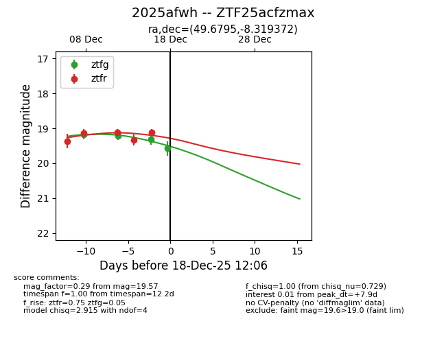
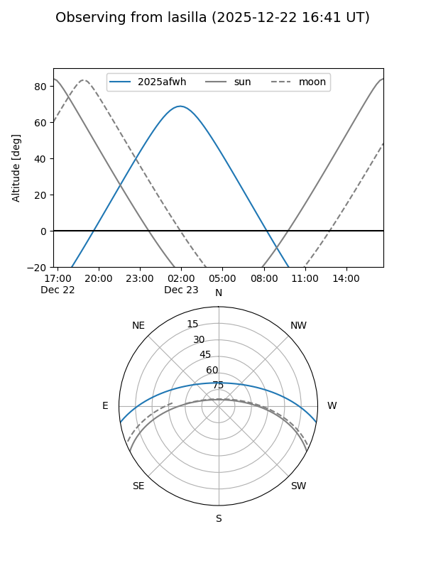
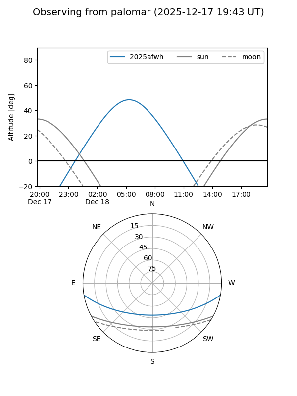
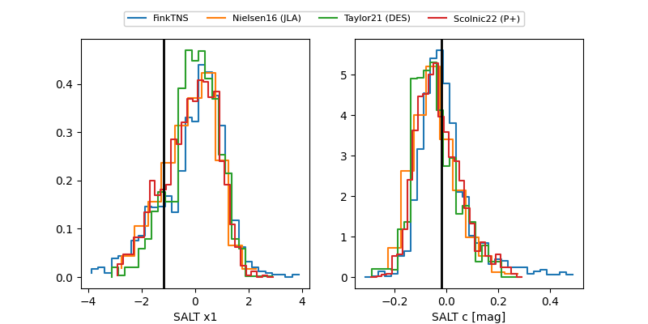

2025afwh
Target 2025afwh at 2025-12-18 12:07
Aliases and brokers:
FINK: fink-portal.org/ZTF25acfzmax
Lasair: lasair-ztf.lsst.ac.uk/objects/ZTF25acfzmax
ALeRCE: alerce.online/object/ZTF25acfzmax
TNS: wis-tns.org/object/2025afwh
YSE: ziggy.ucolick.org/yse/transient_detail/2025afwh
alt names
ZTF25acfzmax (ztf,fink_ztf)
2025afwh (tns,yse)
Coordinates:
equatorial (ra, dec) = 49.6795,-8.31937
equatorial (HMS+DMS) = 03:18:43.07,-08:19:09.74
galactic (l, b) = (191.5304,-50.43791)
Photometry
last ztfg=19.57, ztfr=19.12
4 ztfg, 5 ztfr detections
Lightcurve

Visibility


Additional plots
